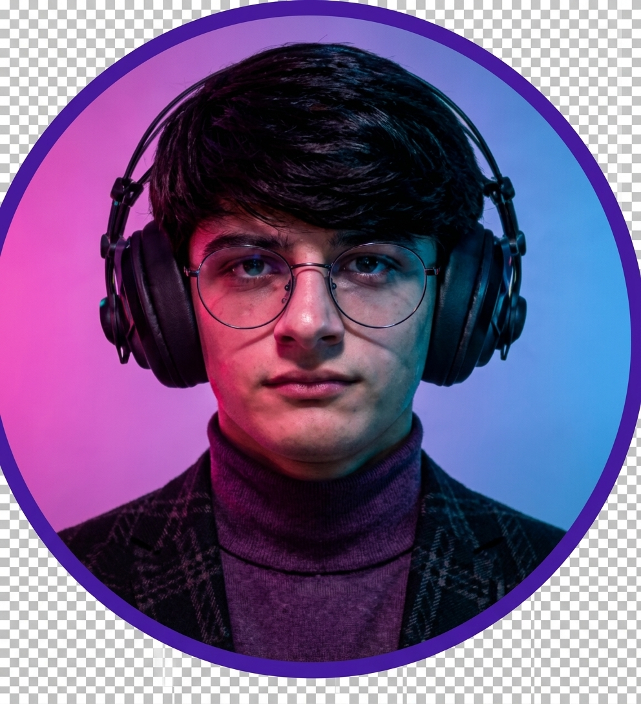

Нақши Технологияҳои Мултимедиявӣ дар Соҳаҳои Гуногун
Аз бонкдорӣ то тандурустӣ: чӣ тавр видео, аудио, графика ва зеҳни сунъӣ таҷрибаи мизоҷонро тағйир медиҳанд.
Экосистемаи Рақамӣ
Омезиши технологияҳои баланд бо хизматрасониҳои бехатар ва фаҳмо.
Муқаддимаи умумӣ: мултимедия дигаргуншавии рақамии бонкдорӣ ва дигар соҳаҳоро таъмин мекунад.
Бонкдории Видеоӣ ва Терминалҳои VTM
VTM (Video Teller Machine) чист?
Насли нави банкоматҳо бо экрани HD ва алоқаи видеоии дуҷониба бо оператори дурдаст.
- Корти фаврӣ: чопи корт дар ҷой дар 2 дақиқа.
- Сканери ҳуҷҷат: тасдиқи биометрӣ ва хондани паспорт.
- Машварати 24/7: видео-алоқа бо мутахассис.
«Хуш омадед ба хидматрасонии интерактивӣ!»
VTM марҳилаи олии истифодаи мултимедия дар филиалҳои муосир аст.
Мобил-Бонкинг ва Визуализатсияи Хароҷот
Диаграммаи Умумии Хароҷот
Визуализатсияи хароҷот ба корбар имкон медиҳад, ки буҷети худро беҳтар назорат кунад.
Чат-Ботҳо ва Ассистентҳои Овозӣ
Аватарҳои сунъӣ (Digital Humans) ба саволҳои мизоҷон бо симо ва овоз ҷавоб медиҳанд.
Иҷрои фармонҳо бо овоз: «Сомон, ба корти фарзандам 100 сомонӣ интиқол деҳ».
Чат-ботҳо хизматрасониро 24 соат бе танаффус таъмин мекунанд.
Муқоисаи Бонки Анъанавӣ ва Мултимедиявӣ
| Меъёр | Анъанавӣ | Мултимедиявӣ |
|---|---|---|
| Муошират | Ҳузури физикӣ, коғазбозӣ, навбат | Видео-чат, VTM, мобилӣ, AI |
| Вақти амалиёт | 15–45 дақиқа | 1–3 дақиқа |
| Шарҳи хизмат | Брошюра ва матни дароз | Инфографика, видео, калкулятор |
Ҷадвал бартарии шакли мултимедиявиро нисбат ба анъанавӣ нишон медиҳад.

Мирзозода Нуриддин
Донишҷӯи курси 2-юм | Ихтисоси Web-дизайнер ва графикаи компютерӣ
Донишгоҳи давлатии тиҷорати Тоҷикистон